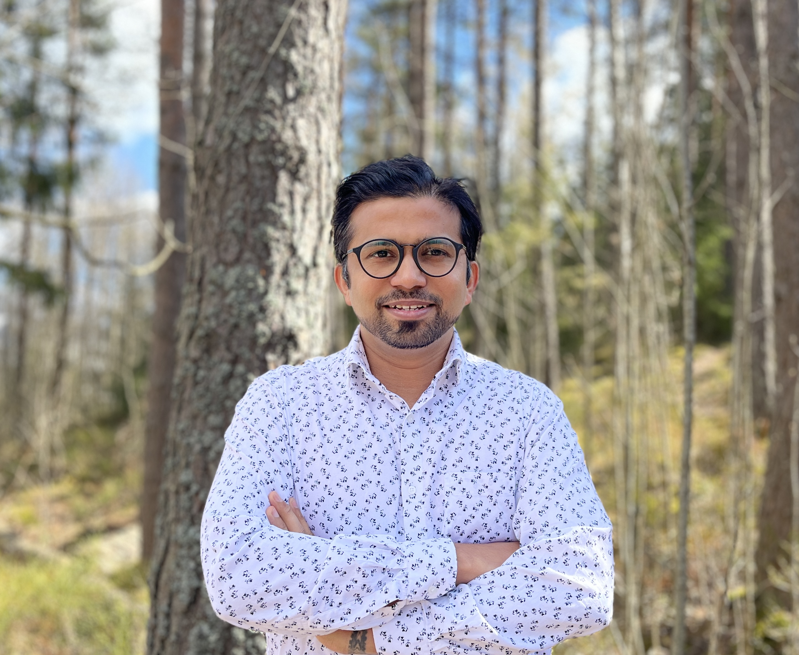
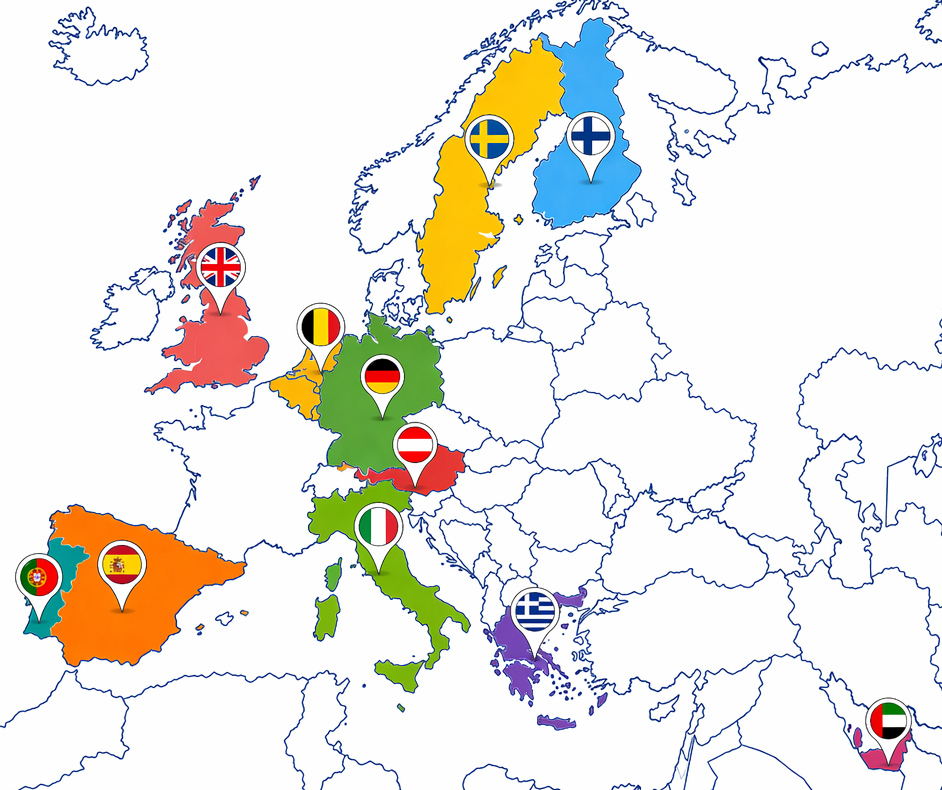

Professional Summary
Interface of experiments and modeling
I develop robust simulation workflows and translate lab-scale findings into practical tools for composite and soft-material systems, with reproducible computational pipelines.
Scientific Profile
Materials Research and Simulation
Marie Sklodowska-Curie researcher with 10+ years of experience across academic and industrial R&D, focused on bio-composites, soft materials, and model-driven decision support.


Professional Summary
I develop robust simulation workflows and translate lab-scale findings into practical tools for composite and soft-material systems, with reproducible computational pipelines.
Technical Skills & Updates
GitHub Contributions
Reproducible, open-source tools spanning FEM solver workflows, experimental data pipelines, and research documentation.
Current Projects
Publications